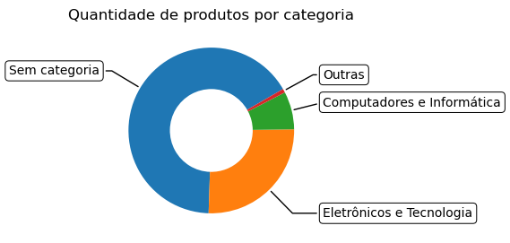
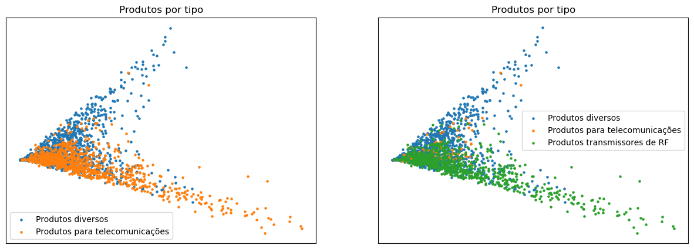
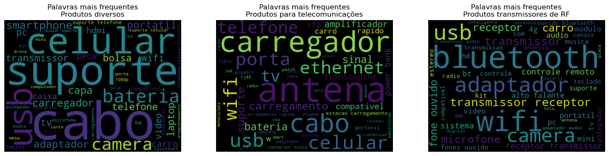
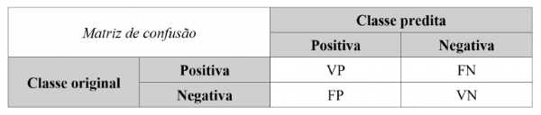
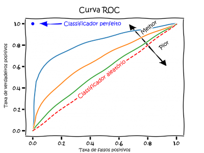
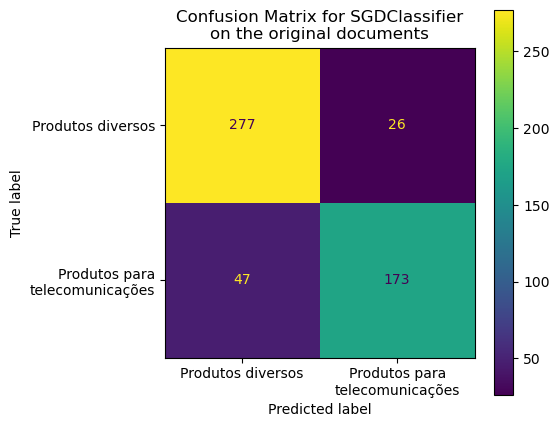
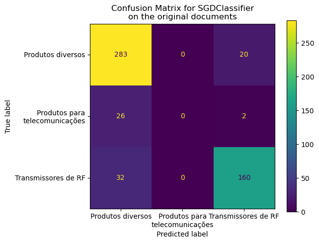

Os dados brutos da Amazon contém 151.782 registros, desdes, 100.406 não possuem categorias definidas pelos vendedores enquanto os demais estão distribuídos em outras 30 categorias primárias.
Quase a totalidade dos dados estão distribuídos em duas categorias princiais: 97,8% dos produtos pertencem às categorias “Eletrônicos e Tecnologia” ou “Computadores e Informática”
╭────────────────────────────┬──────────────╮
│ Categoria │ Quantidade │
├────────────────────────────┼──────────────┤
│ Sem categoria │ 100.406 │
├────────────────────────────┼──────────────┤
│ Eletrônicos e Tecnologia │ 39.062 │
├────────────────────────────┼──────────────┤
│ Computadores e Informática │ 11.194 │
├────────────────────────────┼──────────────┤
│ Outras │ 1.120 │
╰────────────────────────────┴──────────────╯
Code
#! hide: truelabels = df_top_categories['Categoria'].to_numpy()values = df_top_categories['Quantidade'].to_numpy()title ='Quantidade de produtos por categoria'startangle =30plot_donut(labels, values, title, startangle)

Documentos no espaço vetorial agrupados por categoria
A visualização dos documentos no espaço vetorial, considerando tanto o título do anúncio quanto a descrição, quando existente, mostrou que as categorias indicadas pelos vendedores podem não ser um bom fator discriminante pois há grande sobreposição de categorias de documentos.
A aplicação do algortimo de agrupamento K-Means refletiu a sobreposição das categorias e agrupou documentos com categorias sobrepostas em um mesmo grupo.
Observando as principais palavras das categorias e dos grupos (clusters) obtidos através do K-Means, verifica-se mais uma indicação de que as categorias indicadas podem não ser mais adequadas para separação dos produtos.
Observa-se, por exemplo, que as palavras transmissor e wifi são relevantes para as categorias 2 e 3, fone e ouvido para as categorias 1 e 2.
Nos grupos (clusters) preditos pelo K-Means fica como primeira precepção que um grupo contém telefones celulares e acessórios, outro contém carregadores e baterias e o terceiro produtos relacionados a aúdio.
Como alternativa à utilização das categorias informadas pelos vendedores foi selecionada uma amostra de até 10 exemplos de cada categoria completa (categoria principal e até 5 subcategorias) para análise e anotação do tipo do produto.
Foram selecionados e anotados 2.091 exemplos, em 29 tipo de produt. A maioria dos produtos diversos, ou seja, não destinados a telecomunicações foram classificados como Outros. Produtos para telecomunicações foram classificados conforme o tipo, além desses, produtos diversos em quantidade relevante foram classificados conforme o tipo.
Tipo de Produto
Quantidade
Outros
943
Transceptor de Radiação Restrita
599
Cabo (em geral)
89
Transceptor de RF (HF/VHF/UHF)
48
Microfone sem fio
38
Desktop/Notebook
30
Fone de ouvido sem fio
30
Carregadores e fontes (eletrônicos em geral)
27
Câmera sem fio
26
Carregador de celular
26
Impressora e cartuchos
25
Roteador/Reforçador WiFi
25
Antena
23
Baterias (eletrônicos em geral)
21
Extensor de vídeo VGA/HDMI
18
Tablets
16
Carregador sem fio
14
Telefone celular
14
Transceptor/Conversor SFP
14
Cartão de memória
13
Drone
12
Smartwatch
10
Carregador portátil (powerbank)
9
Cabo de rede
6
Reforçador de sinal de celular
5
Smart TV
4
Hub Switch
2
|Modem 3G/4G/WiFi|2| |TV Box|2|
A grande quantidade de tipos de produtos com poucos exemplos torna o processo de aprendizagem de máquina pois há grande sobreposição de exemplos, tornando difícil a correta identificação do produto.
Esse cenário já era esperado pois alguns tipos de produtos podem ser detinados para telecomunicações em determinados cenários e não destinados a telecomunicações em outros cenários, como por exemplos, cabos, fontes, carregadores, baterias, etc.
Amostra dos documentos no espaço vetorial agrupados por tipo de produto
A visualização da amostra dos documentos no espaço vetorial mostrou que há sobreposição de tipos de produtos com poucos exemplos ao passo que indicou a possibiliade de separação em dois ou três grupos.
Os produtos da amostra foram reclassificados em duas categorias: produtos diversos e produtos para telecomunicações. Os produtos para telecomunicações foram classificados ainda em protudos transmissores de radiofrequencia e produtos não transmissores de radiofrequência.
Code
# df_cat_sample['clean_doc'] = df_cat_sample.doc.map(doc_cleaner)# columns_to_keep = ['doc', 'clean_doc', 'labeled_category', 'telecom_product', 'rf_transmitter', 'category']# df_cat_sample = df_cat_sample[columns_to_keep]# df_cat_samplemap_telecom_product = {'Antena': 1, 'Baterias (eletrônicos em geral)': 0, 'Cabo (em geral)': 0, 'Cabo de rede': 1, 'Câmera sem fio': 1, 'Carregador de celular': 1,'Carregador portátil (powerbank)': 1,'Carregador sem fio': 1, 'Carregadores e fontes (eletrônicos em geral)': 0, 'Cartão de memória': 0,'Desktop/Notebook': 0, 'Drone': 1, 'Extensor de vídeo VGA/HDMI': 0, 'Fone de ouvido sem fio': 1, 'Hub Switch': 1, 'Impressora e cartuchos': 0,'Microfone sem fio': 1, 'Modem 3G/4G/WiFi': 1, 'Outros': 0, 'Reforçador de sinal de celular': 1, 'Roteador/Reforçador WiFi': 1, 'Smart TV': 1,'Smartwatch': 1, 'Tablets': 1, 'Telefone celular': 1, 'Transceptor de Radiação Restrita': 1, 'Transceptor de RF (HF/VHF/UHF)': 1, 'Transceptor/Conversor SFP': 1, 'TV Box': 1}map_rf_transmitter = {'Antena': 1, 'Baterias (eletrônicos em geral)': 0, 'Cabo (em geral)': 0, 'Cabo de rede': 1, 'Câmera sem fio': 2, 'Carregador de celular': 1,'Carregador portátil (powerbank)': 1,'Carregador sem fio': 1, 'Carregadores e fontes (eletrônicos em geral)': 0, 'Cartão de memória': 0,'Desktop/Notebook': 0, 'Drone': 2, 'Extensor de vídeo VGA/HDMI': 0, 'Fone de ouvido sem fio': 2, 'Hub Switch': 1, 'Impressora e cartuchos': 0,'Microfone sem fio': 2, 'Modem 3G/4G/WiFi': 2, 'Outros': 0, 'Reforçador de sinal de celular': 2, 'Roteador/Reforçador WiFi': 2, 'Smart TV': 2,'Smartwatch': 2, 'Tablets': 2, 'Telefone celular': 2, 'Transceptor de Radiação Restrita': 2, 'Transceptor de RF (HF/VHF/UHF)': 2, 'Transceptor/Conversor SFP': 1, 'TV Box': 2}df_cat_sample['telecom_product'] = df_cat_sample['labeled_category'].map(map_telecom_product)df_cat_sample['rf_transmitter'] = df_cat_sample['labeled_category'].map(map_rf_transmitter)docs_sample = df_cat_sample['doc']targets = df_cat_sample['telecom_product']targets_rf = df_cat_sample['rf_transmitter']vectorizer = TfidfVectorizer(tokenizer=tokenizer)docs_matrix = vectorizer.fit_transform(docs_sample)legend_map = {0: 'Produtos diversos', 1: 'Produtos para telecomunicações', 2: 'Produtos transmissores de RF'}fig,axs = plt.subplots(1,2,figsize=(15,5))plot_produtcs_matrix(docs_matrix,targets=targets,legend_map=legend_map,ax=axs[0],title='Produtos por tipo')plot_produtcs_matrix(docs_matrix,targets=targets_rf,legend_map=legend_map,ax=axs[1],title='Produtos por tipo')plt.show()

Quando agrupados em duas ou três categorias observa-se, no espaço vetorial, uma sepação entre os grupos, principalmente entre produtos diversos e produtos de telecomunicações transmissores de radiofrequência, indicando a viabilidade de construção de um classificador.
Quando observadas as palavras mais frequentes em cada categoria observa-se que há palavras discriminantes das categorias, contudo, palavras presentes em mais de uma categoria (cabo, bateria, etc) que demonstram a sobreposição observada.
Code
clean_docs_sample = df_cat_sample['doc'].map(doc_cleaner).valuesfig,axs=plt.subplots(1,3,figsize=(18,10))for i,target inenumerate(np.unique(targets_rf)): ix = np.where(targets_rf==target)[0] plot_wordcloud(clean_docs_sample[ix],ax=axs[i],title=f'Palavras mais frequentes\n{legend_map[i]}')plt.show()

Construção de classificadores
Foram contruídos dois classificadores para avaliação da viabilidade de separação dos produtos em dois ou três grupos distintos.
Métricas de desempenho do classificador
Antes de apresentar os classificadores e resultados obtidos é necessário apresentar brevemente algumas métricas utilizadas para avaliação de seu desempenho.
O desempenho do classificador pode ser medido utilizando-se como base a matriz de confusão: uma tabela que apresenta a quantidade de exemplos corretamente e incorretamente classificados.
Para classificações binária a matriz de confusão apresenta duas linhas e duas colunas que relatam a quantidade de de falsos positivos (FP), falsos negativos (FN), verdadeiros positivos (VP) e verdadeiros negativos (VN). Isso permite uma análise mais detalhada do que a mera proporção de classificações corretas.

confusion
A partir da matriz de confusão derivam-se duas medidas: precisão (precision) e sensibilidade (recall).
A precisão é uma métrica que avalia a quantidade de verdadeiros positivos sobre a soma de todos os valores positivos. Em outras palavras, é a capacidade do modelo de classificar corretamente os verdadeiros positivos, evitando falsos positivos.
\(Precisão = \frac{VP}{VP+FP}\)
A sensbilidade avalia a capacidade do método de detectar com sucesso resultados classificados como positivos. Em outras palavras, é a capacidade do modelo de encontrar corretamente os verdadeiros positivos, evitando falsos negativos.
\(Sensibilidade = \frac{VP}{VP+FN}\)
A curva ROC, do inglês Receiver Operating Characteristic Curve, ou na tradução “Curva Característica de Operação do Receptor” é um gráfico que permite avaliar um classificador binário. Essa visualização leva em consideração a taxa de verdadeiros positivos e a taxa de falsos positivos. Esse gráfico permite comparar diferentes classificadores e definir qual o melhor com base em diferentes pontos de corte. Na prática, quanto mais próximo do topo do eixo Y melhor o classificador.

roc
Uma curva ROC pode ser avaliada pela métrica AUC (Area Under the Curve ou “área sob a curva”). AUC calcula a área da forma bidimensional formada abaixo da curva. Essa métrica indica a probabilidade de duas previsões serem corretamente ranqueadas. A AUC será um valor entre 0 e 1. Quanto maior esse valor, melhor a capacidade do modelo em separar classes.
Mais informações sobre métricas de desempenho de classificadores pode ser obtida em:
Classificador binário: produtos diversos vs produtos para telecomunicações
Code
X = df_cat_sample['doc']y = df_cat_sample['telecom_product']target_names = ['Produtos diversos', 'Produtos para telecomunicações']target_names_confusion = ['Produtos diversos', 'Produtos para\ntelecomunicações']X_train, X_test, y_train, y_test = train_test_split(X, y, test_size=0.25, random_state=724)tfidf_vectorizer = TfidfVectorizer(tokenizer=tokenizer)X_train_tfidf = tfidf_vectorizer.fit_transform(X_train)X_test_tfidf = tfidf_vectorizer.transform(X_test)clf_sgd = SGDClassifier(loss='log_loss', penalty='l2', alpha=1e-3, random_state=42, max_iter=5, tol=None)clf_sgd.fit(X_train_tfidf, y_train)predicted = clf_sgd.predict(X_test_tfidf)print('Accuracy of SGD classifier on training set: {:.3f}' .format(clf_sgd.score(X_train_tfidf, y_train)))print('Accuracy of SGD classifier on test set: {:.3f}' .format(clf_sgd.score(X_test_tfidf, y_test)))print('AUC of SGD classifier on test set: {:.3f}' .format(roc_auc_score(y_test,clf_sgd.predict_proba(X_test_tfidf)[:,1])))print()print(classification_report(y_test, predicted, target_names=target_names))fig, ax = plt.subplots(figsize=(5, 5))ConfusionMatrixDisplay.from_predictions(y_test, predicted, ax=ax)ax.xaxis.set_ticklabels(target_names_confusion)ax.yaxis.set_ticklabels(target_names_confusion)_ = ax.set_title(f"Confusion Matrix for {clf_sgd.__class__.__name__}\non the original documents")
Accuracy of SGD classifier on training set: 0.936
Accuracy of SGD classifier on test set: 0.860
AUC of SGD classifier on test set: 0.931
precision recall f1-score support
Produtos diversos 0.85 0.91 0.88 303
Produtos para telecomunicações 0.87 0.79 0.83 220
accuracy 0.86 523
macro avg 0.86 0.85 0.85 523
weighted avg 0.86 0.86 0.86 523

Classificador de três classes: produtos diversos vs produtos para telecomunicações vs produtos emissores de RF
Code
X = df_cat_sample['doc']y = df_cat_sample['rf_transmitter']target_names = ['Produtos diversos', 'Produtos para telecomunicações', 'Transmissores de RF']target_names_confusion = ['Produtos diversos', 'Produtos para\ntelecomunicações', 'Transmissores de RF']X_train, X_test, y_train, y_test = train_test_split(X, y, test_size=0.25, random_state=724)tfidf_vectorizer = TfidfVectorizer(tokenizer=tokenizer)X_train_tfidf = tfidf_vectorizer.fit_transform(X_train)X_test_tfidf = tfidf_vectorizer.transform(X_test)clf_sgd = SGDClassifier(loss='log_loss', penalty='l2', alpha=1e-3, random_state=42, max_iter=5, tol=None)clf_sgd.fit(X_train_tfidf, y_train)predicted = clf_sgd.predict(X_test_tfidf)print('Accuracy of SGD classifier on training set: {:.3f}' .format(clf_sgd.score(X_train_tfidf, y_train)))print('Accuracy of SGD classifier on test set: {:.3f}' .format(clf_sgd.score(X_test_tfidf, y_test)))print()print(classification_report(y_test, predicted, target_names=target_names))fig, ax = plt.subplots(figsize=(6, 5))ConfusionMatrixDisplay.from_predictions(y_test, predicted, ax=ax)ax.xaxis.set_ticklabels(target_names_confusion)ax.yaxis.set_ticklabels(target_names_confusion)_ = ax.set_title(f"Confusion Matrix for {clf_sgd.__class__.__name__}\non the original documents")
Accuracy of SGD classifier on training set: 0.910
Accuracy of SGD classifier on test set: 0.847
precision recall f1-score support
Produtos diversos 0.83 0.93 0.88 303
Produtos para telecomunicações 0.00 0.00 0.00 28
Transmissores de RF 0.88 0.83 0.86 192
accuracy 0.85 523
macro avg 0.57 0.59 0.58 523
weighted avg 0.80 0.85 0.82 523

Classificador binário: produtos diversos vs transmissores de RF
Code
map_rf_transmitter = {0: 0, 1: 0, 2: 1}X = df_cat_sample['doc']y = df_cat_sample['rf_transmitter'].map(map_rf_transmitter)target_names = ['Produtos comuns', 'Produtos transmissores de RF']target_names_confusion = ['Produtos comuns', 'Transmissores de RF']X_train, X_test, y_train, y_test = train_test_split(X, y, test_size=0.25, random_state=724)tfidf_vectorizer = TfidfVectorizer(tokenizer=tokenizer)X_train_tfidf = tfidf_vectorizer.fit_transform(X_train)X_test_tfidf = tfidf_vectorizer.transform(X_test)clf_sgd = SGDClassifier(loss='log_loss', penalty='l2', alpha=1e-3, random_state=42, max_iter=5, tol=None)clf_sgd.fit(X_train_tfidf, y_train)predicted = clf_sgd.predict(X_test_tfidf)print('Accuracy of SGD classifier on training set: {:.3f}' .format(clf_sgd.score(X_train_tfidf, y_train)))print('Accuracy of SGD classifier on test set: {:.3f}' .format(clf_sgd.score(X_test_tfidf, y_test)))print('AUC of SGD classifier on test set: {:.3f}' .format(roc_auc_score(y_test,clf_sgd.predict_proba(X_test_tfidf)[:,1])))print()print(classification_report(y_test, predicted, target_names=target_names))fig, ax = plt.subplots(figsize=(5, 5))ConfusionMatrixDisplay.from_predictions(y_test, predicted, ax=ax)ax.xaxis.set_ticklabels(target_names_confusion)ax.yaxis.set_ticklabels(target_names_confusion)_ = ax.set_title(f"Confusion Matrix for {clf_sgd.__class__.__name__}\non the original documents")
Accuracy of SGD classifier on training set: 0.942
Accuracy of SGD classifier on test set: 0.891
AUC of SGD classifier on test set: 0.952
precision recall f1-score support
Produtos comuns 0.89 0.95 0.92 331
Produtos transmissores de RF 0.89 0.80 0.84 192
accuracy 0.89 523
macro avg 0.89 0.87 0.88 523
weighted avg 0.89 0.89 0.89 523